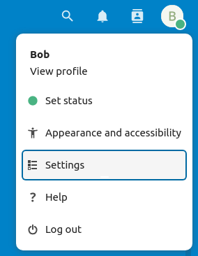

Ως χρήστης, μπορείτε να διαχειριστείτε τις προσωπικές σας ρυθμίσεις.
Για πρόσβαση στις προσωπικές σας ρυθμίσεις:
Click on your profile picture in the top right corner of your Nextcloud instance to open the menu

Clicking on Settings from the drop down menu opens the user preferences
Σημείωση
Εάν είστε διαχειριστής, μπορείτε επίσης να διαχειρίζεστε χρήστες και να διαχειρίζεστε τον διακομιστή. Αυτοί οι σύνδεσμοι δεν εμφανίζονται σε έναν χρήστη που δεν είναι διαχειριστής.
Οι επιλογές που παρατίθενται στη σελίδα προσωπικών ρυθμίσεων εξαρτώνται από τις εφαρμογές που ενεργοποιούνται από τον διαχειριστή. Μερικές από τις δυνατότητες που θα δείτε περιλαμβάνουν τα εξής:
Χρήση και διαθέσιμο όριο
Διαχειριστείτε την εικόνα του προφίλ σας
Πλήρες όνομα (Μπορείτε να το κάνετε αυτό που θέλετε, καθώς είναι ξεχωριστό από το όνομα σύνδεσης Nextcloud, το οποίο είναι μοναδικό και δεν μπορεί να αλλάξει)
Σύνδεσμοι σε εφαρμογές για υπολογιστές και κινητές συσκευές
Διαχειριστείτε τη ροή δραστηριότητας και τις ειδοποιήσεις σας
Προεπιλεγμένος φάκελος για αποθήκευση νέων εγγράφων
Το αναγνωριστικό κοινής χρήσης κοινής χρήσης
Κοινωνικοί σύνδεσμοι κοινής χρήσης
Έκδοση Nextcloud
Σημείωση
Available options and settings depending on your administrator’s configuration.
If you are not able to change the password or the display name in your personal settings,
please contact your administrator for help.
Some administrators decide to share their global address book with other Nextcloud instances (so called Trusted Servers) or even with the wider world.
This is helpful when two instances want to work closely together, or when people want to use Nextcloud as a virtual telephone book for others to browse.
It also allows searching for contacts, creating shares and much more.
You can change what personal data of yours is shared by setting the scope of your data. Clicking on the lock icon will open the following dropdown
next to each entry:
If you set your data to Private, nobody but you will be able to see it.
If you set your data to Local, all logged in users within your Nextcloud instance will be able to see the information, but noone outside of it.
If you set your data to Federated, the trusted server(s) which are added by your administrator will be able to see this data, in addition to all logged in users.
If you set your data to Global, anyone can see your data. For some use cases this is wanted.
Someone with a public facing role such as marketing or sales might want to share their contact with a wide variety of connections which might not be using Nextcloud.